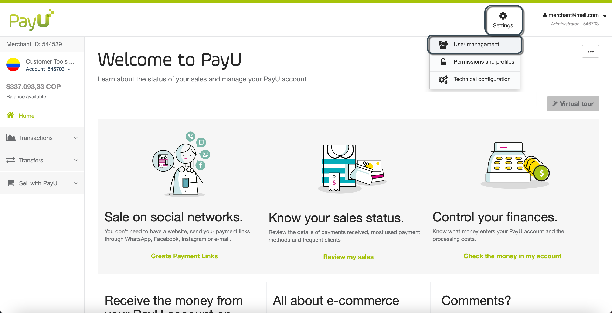
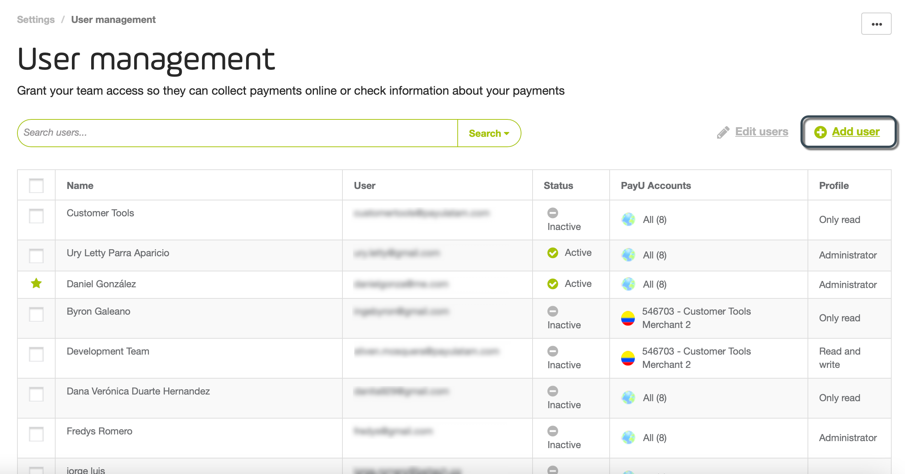
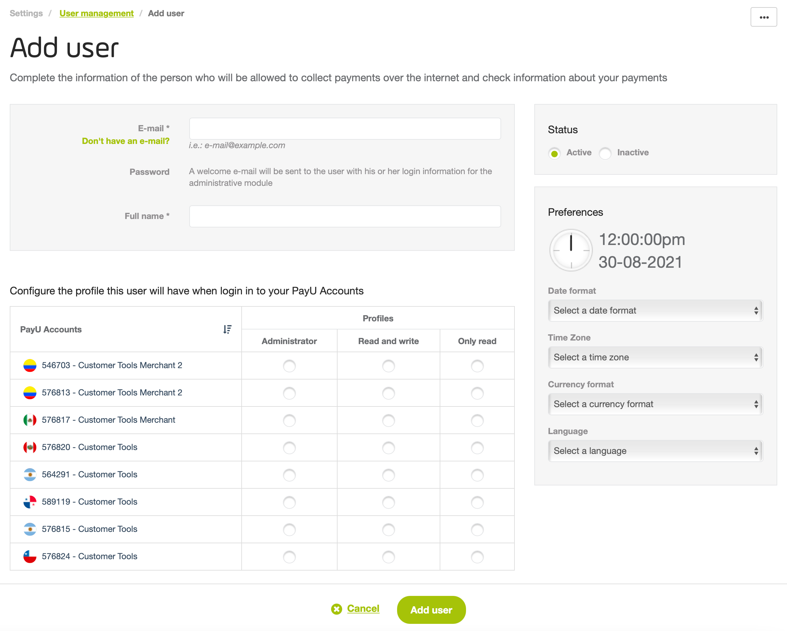
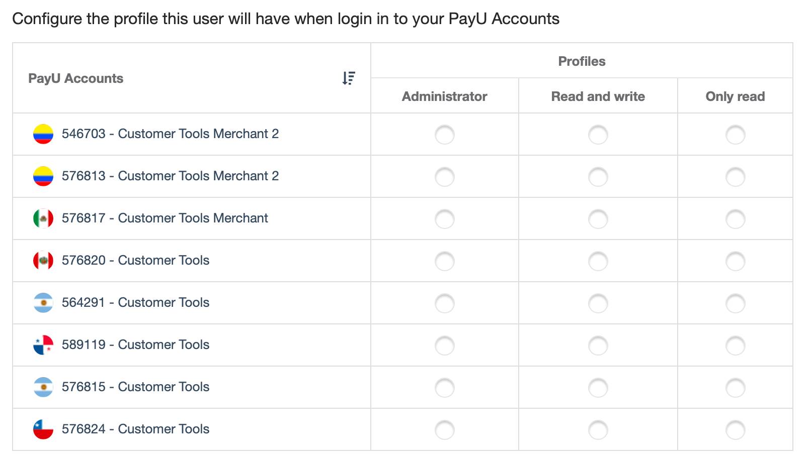
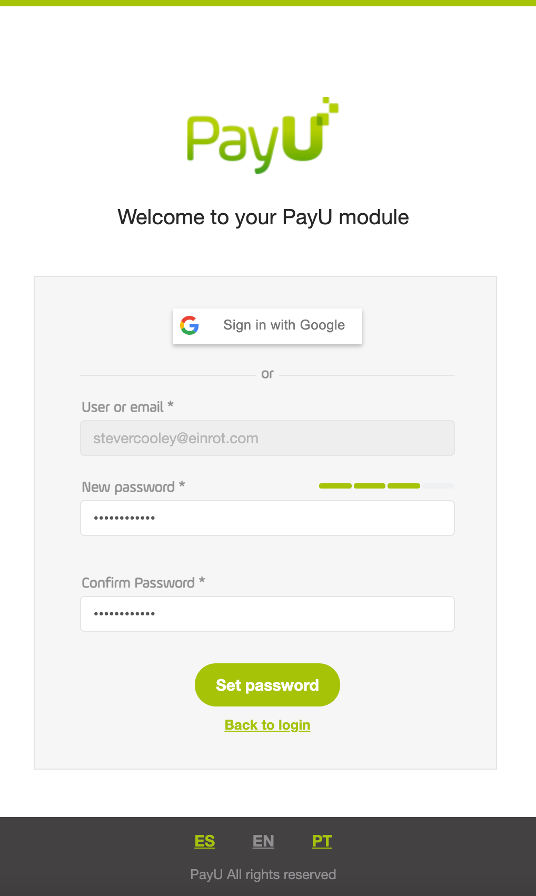
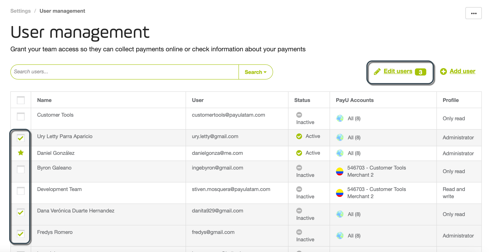

User Management
Before moving on, let’s recap some key terms:
- A user is a person who has a profile to manage or consult the information of an account.
- A profile is a set of permissions to access an account.
- A user can have one or multiple profiles, this means that a user can access multiple accounts and multiple merchants.
For further information, read the concepts behind the PayU Module.
Permission required
To have access to this module, you need to have a profile with the following permission enabled:
- Review Users
This permission allows you to search a specified user. - Create, edit and delete users
Refer to Profiles and Permissions for more information.
User management
To manage users, open you PayU account and click Settings menu at the top the screen and then, select User management.

The User management module opens, here, you can find a list of the available users along with their status, the accounts they can access, and their profile.

Note
The users marked with a green star () are default users which cannot be deleted (deactivated).Add users
You can create a user using their e-mail address or providing a username. Follow the steps below to create a new user.
- In the User management module, click Add user.

- The Add user window appears. Here, you can provide the information of the person who will be allowed to collect payments over the internet and check information about your payments, according to the permission you provide.

- Provide the following user information:
- E-mail: E-mail address of the new user. PayU sends the login information to this e-mail address, make sure it is valid and the user has access to it.
Alternatively, you can create a user without using an e-mail address. This is useful specially when the user you want to create is attached to a role and not to a specific person. To do this, click Don’t have an e-mail? and provide the following information:- User: username used to log in. This user name cannot have numbers nor special characters.
- E-mail (Admin): provide the e-mail of the admin user to which, PayU send the options to generate or recover the password for this user.
- Full name: name of the user you want to create.
- Status: set if the user you want to create is Active or Inactive.
- Configure the user preferences. You can configure any of the following:
- Date format: change the format in which you want to display the dates in your PayU Module,

You can use any of the following formats:
| Format | English Format | Example August 24, 2021 |
|---|---|---|
| dd/mm/aaaa | dd/mm/yyyy | 24/08/2021 |
| mm/dd/aaaa | mm/dd/yyyy | 08/24/2021 |
| aaaa/mm/dd | yyyy/mm/dd | 2021/08/24 |
| aaaa/mmm/dd | yyyy/mmm/dd | 2021/Aug/24 |
| dd-mm-aaaa | dd-mm-yyyy | 24-08-2021 |
| mm-dd-aaaa | mm-dd-yyyy | 08-24-2021 |
| aaaa-mm-dd | yyyy-mm-dd | 2021-08-24 |
| aaaa-mmm-dd | yyyy-mmm-dd | 2021-Aug-24 |
- Time Zone: change the time zone of the country in which you want to display the transaction’s information.

- Currency format: change the display format of the currency values shown in your PayU module.

- Language: change the language of your PayU module.

- At the bottom of the screen, all the profiles created (both default and custom) loads along with the accounts of the current merchant. Configure the access for each account setting a profile, if you don’t want to enable access to an account, don’t select a profile.

Note
If you want to assign a custom profile, you must create it first.- Once finish, click Add user.

- At this point, you have added the new user! We sent an e-mail to user address so they can access the PayU module.
The new user has to activate the account using the Activate your account button in the e-mail.

Note
If the user was created without using e-mail, the instructions to activate the account are sent to the Admin e-mail you defined.- The new user needs to set a new password to access the account.

- Once the user sets the new password, they can access to the selected accounts using their credentials.
Search users
When you need to find a specific user, you can use the filter options to find one or more users that meet given conditions.
In the User management module, click the Search users field to see the available filters.

Once you have selected the filters, click Search. All the users that meets the conditions selected are displayed in the table.

If you want to remove a filter, click the x icon next to it.
Edit users
Through the User management module, you can update some information of a user. To update a user, search and click it in the User management module.

You can update the following information:
- Full name of a user
- Request a password recovery.
- Update the user status (Active or Inactive)
- Change or remove the profile assigned to a given account.
Note
The information of the user preferences cannot be updated using this option, this information is updated by each user by their own.Once finish, click Save setting to apply the changes.
Edit multiple users
To edit multiple users, search them and use the checkbox at the left. Then, click Edit users (n).

The Edit users (n) window appears, where you can update the following information:
- Request a password recovery for all the users.
- Update their user status (Active or Inactive)
- Assign a profile to a given account.

Take into account that using this option, all the users will have the same configuration you define here.
Once finish, click Save setting to apply the changes.